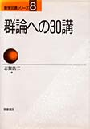

物理数学
物理を学ぶには数学が必要です。
しかし「数学の専門書」はやたら厳密で
物理に必要のないところに
重点が置かれていることがあります。
やる気に満ちている初学者を想定して
読みやすそうな本を集めてみました。
やさしすぎたり難しすぎたりして
読者を選びそうなものは
表示の負担を減らすために
テキストリンクのみにしてあります。
書店入り口へ
物理数学あれこれ
色んな数学分野をまとめて書いてくれている本です

物理のための数学 |
岩波物理入門コースの中の一冊です。古くからあり、定評があります。 （旧版の中古が安く出回っています。） 新装版は旧版に比べてかなりスリムになっていますが、内容やページ数は同じです。 内容は、ベクトル、行列、常微分方程式、ベクトルの微分（ベクトル解析）、多重積分、フーリエ解析、偏微分方程式です。 |

物理の数学 |
岩波基礎物理シリーズの新装版です。 私はまだ読んだことが無いのですが評判が良いです。 新装版として出たばかりなのでアマゾンのレビューはまだ書かれていません。 旧版の方に書かれているレビューを参考にしてみてください。 内容は、微積分、行列、ベクトル解析、複素関数、常微分方程式、フーリエ解析、偏微分方程式です。 |

物理数学 |
裳華房テキストシリーズの中の一冊です。 大変わかりやすく、親切丁寧な内容です。 内容は、常微分方程式、ベクトル解析、複素関数論、フーリエ解析の4分野しかなく、他の教科書が必要になります。 そもそも一冊で済ませようとしてはいけません。 |

これならわかる工学部で学ぶ数学 |
数学的にもしっかりしていて、ページ数も多く、内容もぎっしり詰まっています。 ただし著者が数学者であることもあって、少しばかり難しいかもしれません。 厳密な扱いが気になったときなどに辞書的に使うのが良いかと思います。 内容は、行列、ベクトル解析、常微分方程式、複素関数、フーリエ解析、ラプラス変換です。 |
| 数学：物理を学び楽しむために |
ネット上にPDF形式のファイルとして置いてある無料の教科書です。 誰でも制限なしにダウンロードして読めます。 700ページを超える大作です。 これが読めるならわざわざ本を買う必要がないかもしれません。 第9章の偏微分方程式あたりだけが未完成です。 この存在を隠したまま本を売るのは公正ではないと感じたので載せておくことにしました。 |
微分・積分

ヴィジュアルガイド物理数学（1変数の微積分と常微分方程式） |
1変数の関数に関しての微積分の話だけでまとめられている教科書です。 微分方程式にまで話がつながっています。 ついつい微積のあらゆる話題に触れたくなってしまうところを、 あえて1変数関数に絞っている一貫性が理にかなっていて好感が持てます。 |

ヴィジュアルガイド物理数学（多変数関数と偏微分） |
多変数関数の微積分の話で構成されています。 （最初の方は基本の確認ということで1変数関数の微積分の話も入っています） ベクトル解析や偏微分方程式の話題を含みます。 |
線形代数（行列）

キーポイント線形代数 |
応用的な面に絞って分かりやすくまとめられている本です。 |

線型代数入門 |
物理学向けとは言い難いのですが、数学書としては定番中の定番の入門書なので、持っていて損はないものです。 線形代数が数学の文脈ではどのように説明されるのかを知っておくのも大事だと思います。 |
複素関数論
最近になって色んな本が出すぎていてどれがいいのか選べません

なるほど複素関数 |
理工系向けに書かれた複素関数論の教科書で、大変わかりやすい説明がされています。 しかも応用にも多くのページを使っています。 |

複素数30講 |
有名なシリーズの中の一冊です。 数学の本なので物理と関連付けた書き方にはなっていませんが、物理の基本的なところで必要なことは一通り載っています。 |

ヴィジュアル複素解析 |
残念ながら入手困難になってしまっていますが、特徴があって興味深い本なのでついでに紹介しておきます。 物理学には差し当たって必要ないほどの多くのことがらに触れています。 それでいて図を大量に使ったイメージ重視の解説のために数学書っぽくもありません。 そういうわけで、読者のターゲットが分かりにくいです。 おそらくそのせいで日本の商業ルートから外れてしまったのではないかと思うのですが、 一言で言えば、複素関数が好きな人のための本だと思います。 600ページ以上あります。 定価は6380円（税込）です。 |
フーリエ解析

フーリエ解析 |
理工系の数学入門コース（新装版）の中の一冊です。 古くからあるもので、理工系向けに分かりやすく書かれています。 ラプラス変換の話題も含みます。 ハードカバーの旧版のレビューも参考にしてみてください。 |

キーポイント フーリエ解析 |
応用的に使う人をターゲットにして、つまづきやすい疑問にしぼって分かりやすく書かれています。 |

物理現象のフーリエ解析 |
1981年に出た本を文庫本として復活再版したものです。 かなり踏み込んだ応用例にまで話題が及んでいます。 文庫本ではないもともとの版が中古で安く手に入ったりしますが、 文庫版の巻末についている千葉逸人先生による厳しい数学的解説が新たな価値を生み出したりもしています。 |
微分方程式
常微分方程式と偏微分方程式があるので注意してください
未知関数の変数が1つか多数かというだけの違いですが大違いです
未知関数の変数が1つか多数かというだけの違いですが大違いです

常微分方程式 |
私は読んだことがないですが、古くからあって評価も高いのでこれで全く問題ないと思います。 |

微分方程式の基礎 |
常微分方程式と偏微分方程式の両方について、解き方を説明してくれています。 |

キーポイント偏微分方程式 |
偏微分方程式の入門書です。 とてもわかり易く書いてくれてあり、これだけでもしばらくは大丈夫だと思います。 |

偏微分方程式―科学者・技術者のための使い方と解き方 |
偏微分方程式の解き方についての大変わかりやすい詳しい教科書です。 |
グリーン関数
微分方程式を解くために使うことがあります

なるほどグリーン関数 |
とてもわかりやすく説明してくれている入門書です。 |

物理とグリーン関数 |
とても詳しく書いてくれてある本で、色んな分野での使用例が学べます。 いきなり具体例から入る書き方なので理論の全体像がわかりにくいかもしれません。 |
群論
対称性を論じるために使います

群・環・体 入門 |
理工系学生向けに書かれており、数学科以外の人でも分かりやすいと評判です。 |

なっとくする群・環・体 |
分かりやすく書けていて、すぐに読み通せて、入口としては良いという本だと思います。 |
|

群論への30講 |
数学の本なので物理と関連付けた書き方にはなっていませんが、群論の基礎を学ぶにはとても良いです。 |

キーポイント 行列と変換群 |
リー群の理工系向け入門書です。 具体的な行列を使って説明しているのでとてもわかり易いです。 |

群と物理 |
主にリー群についての本です。 厳密さが足りませんが、物理で使う人向けに書かれているので助かります。 |

物理学におけるリー代数 |
物理学者向けでリー群について詳しく書かれている教科書は少ないので助かります。 |

物理で「群」とはこんなもの |
軽い読み物です。 あっさりしすぎていて物足りないかもしれませんが、手っ取り早く応用例などの前提知識を仕入れるのには良いと思います。 |

リー代数入門 |
道具として学ぶことを意識して書かれていますが、入門にしては難易度が高めです。 |

線形代数と群の表現〈1〉 |
応用を意識した書き方にはなっていますが、いかにも数学の本という堅い雰囲気です。 第2巻も存在しています。 |

リー群論 |
文庫本で、古典で、難しいです。 原書の発刊は1946年のようです。 |